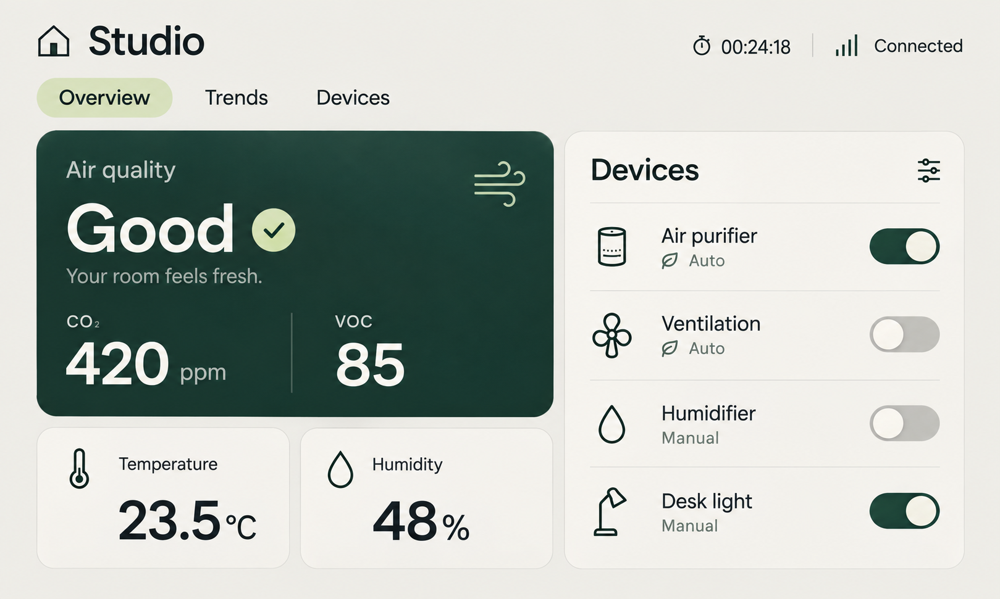
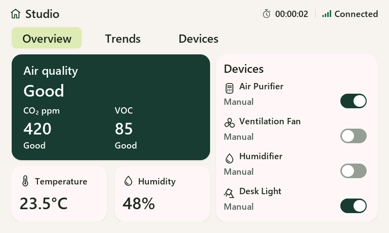
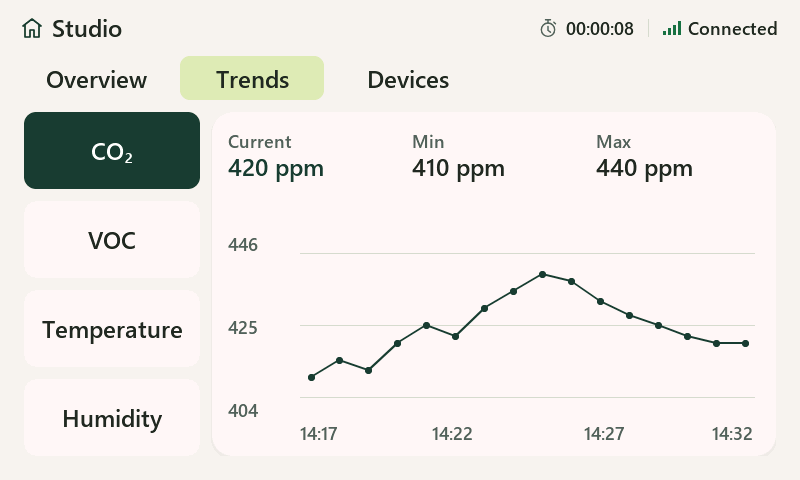
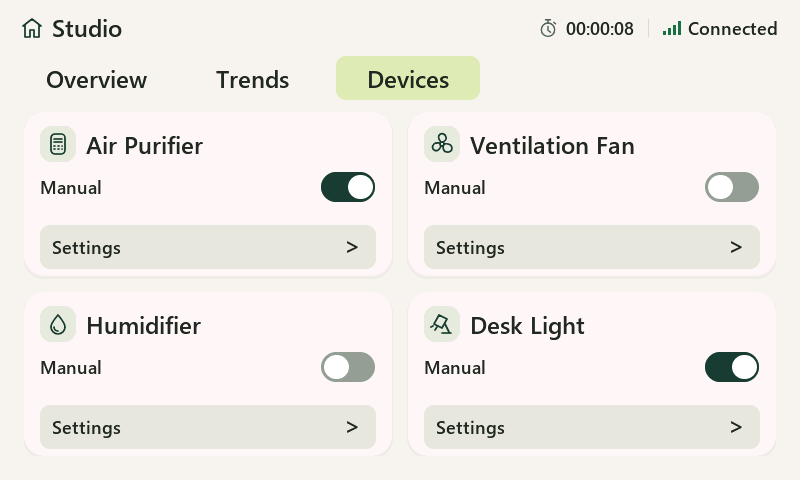
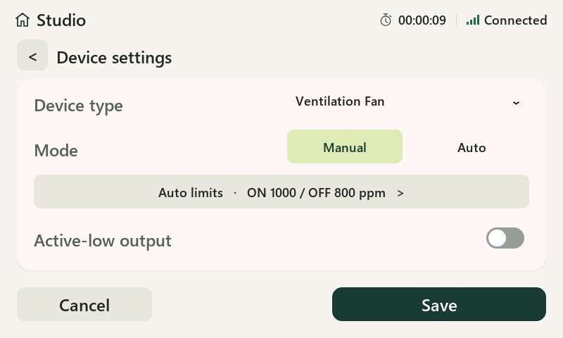
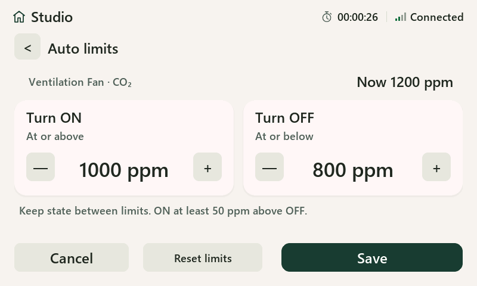
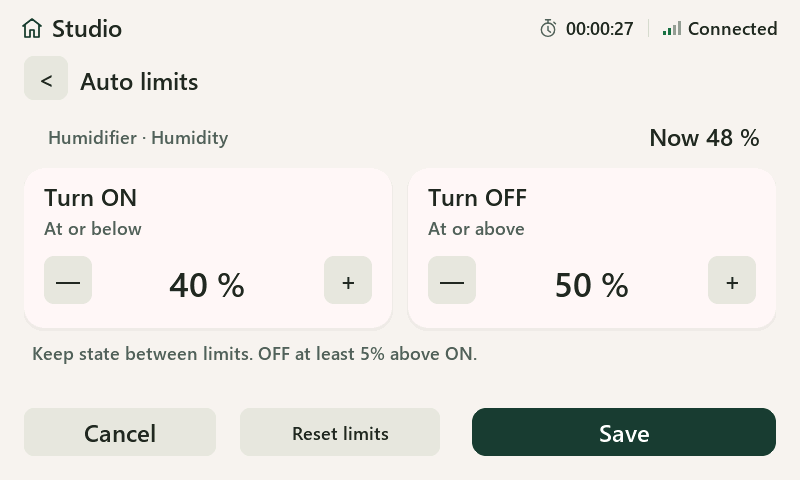
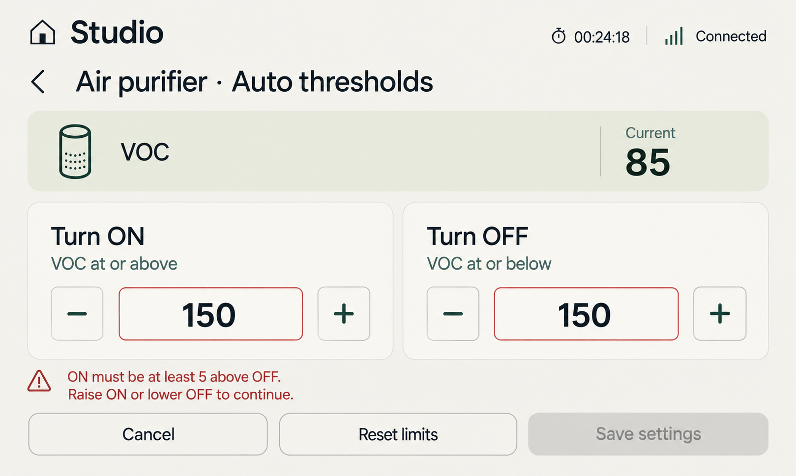
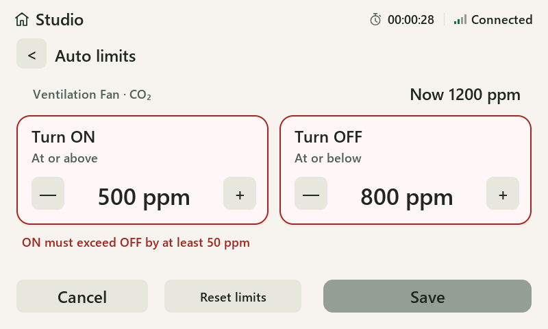

Quiet Architecture: reference versus submitted LVGL
2026-09-18 — changes required. Review ·
Single fix handoff.
Concepts are normalized to the same 5:3 frame as native800×480 output. At a narrow
viewport the reference appears above the actual render. Do not mistake illustrative
values, different modes or smaller generated text for product requirements.
Overview
Different fixture modes are intentional; compare structure, hierarchy and alignment.
Accepted concept — normalized to800×480

Submitted LVGL — native800×480

Trends
History values differ. Compare composition, not illustrative data.
Accepted concept — normalized to800×480
 Submitted LVGL — native800×480
Submitted LVGL — native800×480

Devices
Reference Auto versus current Manual is a fixture difference, not a required startup change.
Accepted concept — normalized to800×480
 Submitted LVGL — native800×480
Submitted LVGL — native800×480

Settings
Compare control anatomy; selected mode differs between fixtures.
Accepted concept — normalized to800×480
 Submitted LVGL — native800×480
Submitted LVGL — native800×480

Auto CO2
Live sensor values differ; thresholds are the same.
Accepted concept — normalized to800×480
 Submitted LVGL — native800×480
Submitted LVGL — native800×480

Auto humidity
Compare the inverse-rule layout and live-reading strip.
Accepted concept — normalized to800×480
 Submitted LVGL — native800×480
Submitted LVGL — native800×480

Invalid Auto draft
NOT matching sensor state: reference VOC150/150; actual CO2 500/800. A VOC invalid capture is required in the fix.
Accepted concept — normalized to800×480

Submitted LVGL — native800×480
